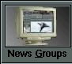

| Contents: | Subscribing | Unsubscribing | The Group Window |
| The Article List | The Article View | Closing Groups | |
| Summary |
| Tutorial 5: Newsreading Basics | |||||||||||
|---|---|---|---|---|---|---|---|---|---|---|---|
|
|
|
| Subscribing to Groups |

NewsRog maintains a list of subscribed groups. This is a subset of the
entire list of groups available from the news server. There might
potentially be tens of thousands of news groups available, and the chances
are that you are only interested in perhaps 10 or 20 of them. All group
management is done from the Group List window. Since NewsRog tracks a
great deal of information about groups, it would take too much space to
put all the groups from the server in the subscribed list, not to mention
that searching for the group you want in a list of 25,000 would quickly
lose its novelty. The default project includes a basic set of newsgroups, but you can add more to build your own customized list. There are several ways to subscribe to newsgroups:
|
| Deleting Subscribed Groups |
To unsubscribe from groups, select the groups you wish to unsubscribe from
in the group list and press the Delete button. If you have
previously read some of these groups and NewsRog has cached the group
headers on your local disk, you will see a prompt like this:
There are several choices available:
|
| The Group Window |
Once you have chosen a group to read from your list of subscribed groups,
you can enter the group and start reading articles. You can do this in
several ways:
The group reader window for that group will then be opened. As many group windows may be opened at once as you wish, but the screen tends to become cluttered with more than one or two, so it is best to close them when you are done reading a group. The group window looks like this:
This version has been deliberately resized to be small enough to fit in this documentation; in general it works best in a larger size (or smaller fonts, which you can set in MUI preferences). Most of the features of the group window will be explained later in this documentation, but enough basics to read articles are given here. You can see that the group window has two main areas. On top is the article list, and on the bottom is the article display (also known as the "Article View"). The size of each can be adjusted by grabbing the balance bar between them and dragging up or down. Each of these areas will be discussed in the next few sections. |
| The Article List |
The article list has three different modes:
To view a particular article, you must be in either All Articles mode or in One Thread mode. Double clicking on the list in either of those modes will fetch the requested article and display it in the article view. Double clicking in All Threads mode will display the articles in the given thread by switching to One Thread mode. You may also press the return key with an entry selected. To move back "up" to a higher mode, you may either press the button that cycles between these images: , or you may use the arrow buttons: . Almost every button or gadget in NewsRog also has a keyboard equivalent; look at the MUI help bubbles to see what the keyboard equivalent is. |
| The Article View |
After the article you have selected is fetched from the network (or local
cache if available), it is displayed in the lower section of the group
window, called the article view. Other features of the article view will
be explained elsewhere in this documentation, but for now, the browse
buttons are of interest. There are two browse buttons: forward
(), and reverse
(). Pressing the forward browse button (or the period/full-stop ".") key will page forward in the article displayed in the article list. When the end of the article is reached, the next article in the present thread will be fetched and displayed. When the end of the thread is reached, the first article in the next thread will be displayed, and so on until the end of the group. Many times, it is possible to browse news using just by pressing the "." key when you are ready to continue reading. The reverse browse button (mapped to the "," key) performs the same function but in reverse. It pages back in the present article, etc. |
| Closing the Group | To close a group, you can use the close gadget in the upper left corner of the window, or the Group Project/Close menu item. This action will close the group window, saving the current set of headers to a local disk cache so they don't have to be fetched from the network next time. |
| Summary |
By this point in the tutorial you should understand:
|